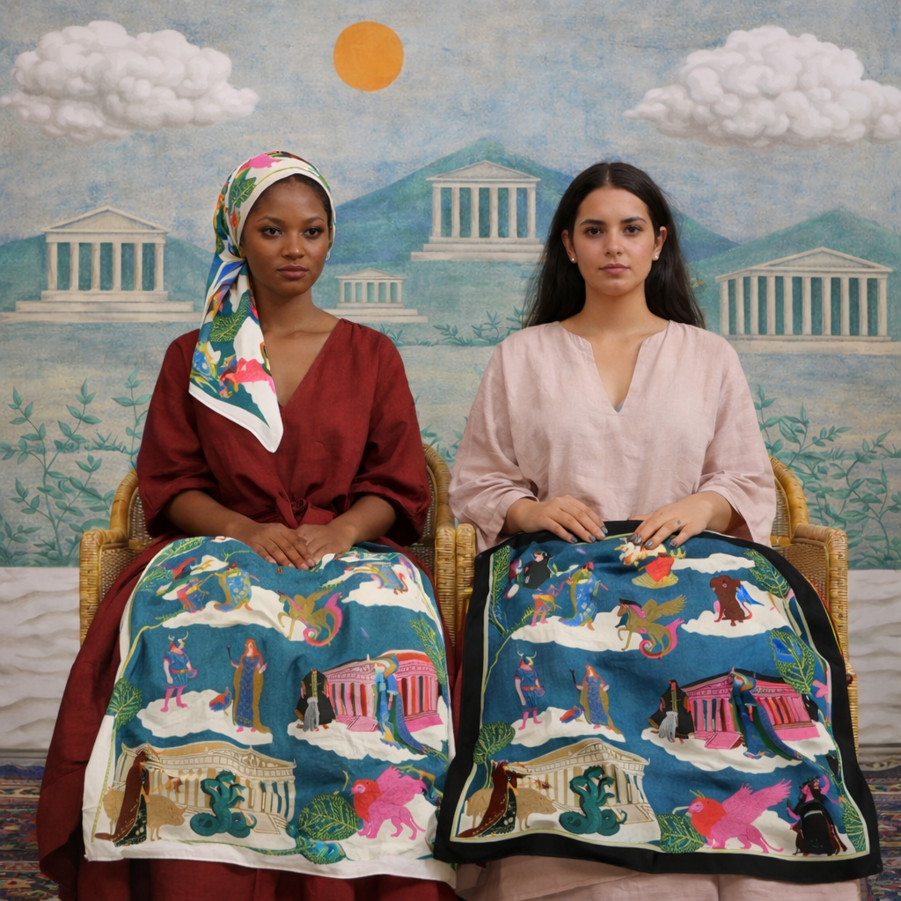
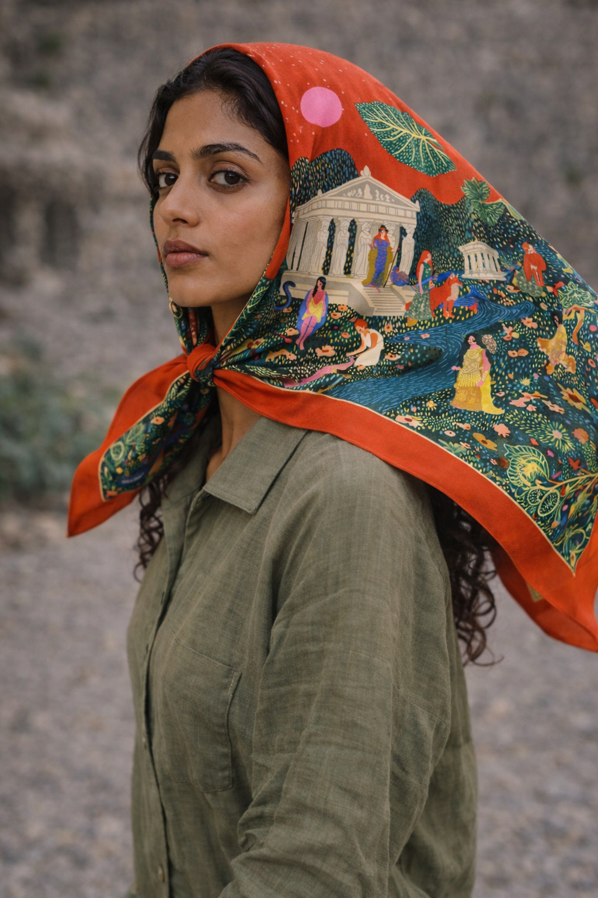
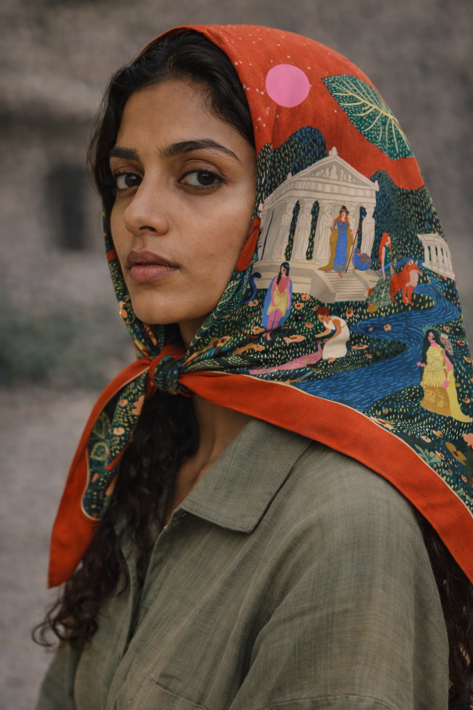
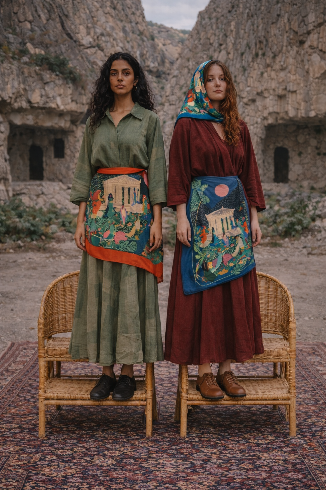
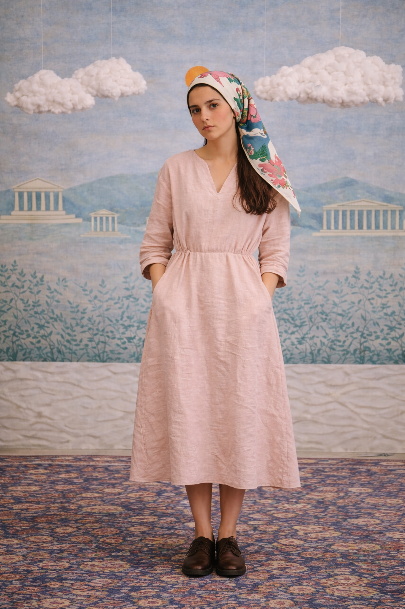
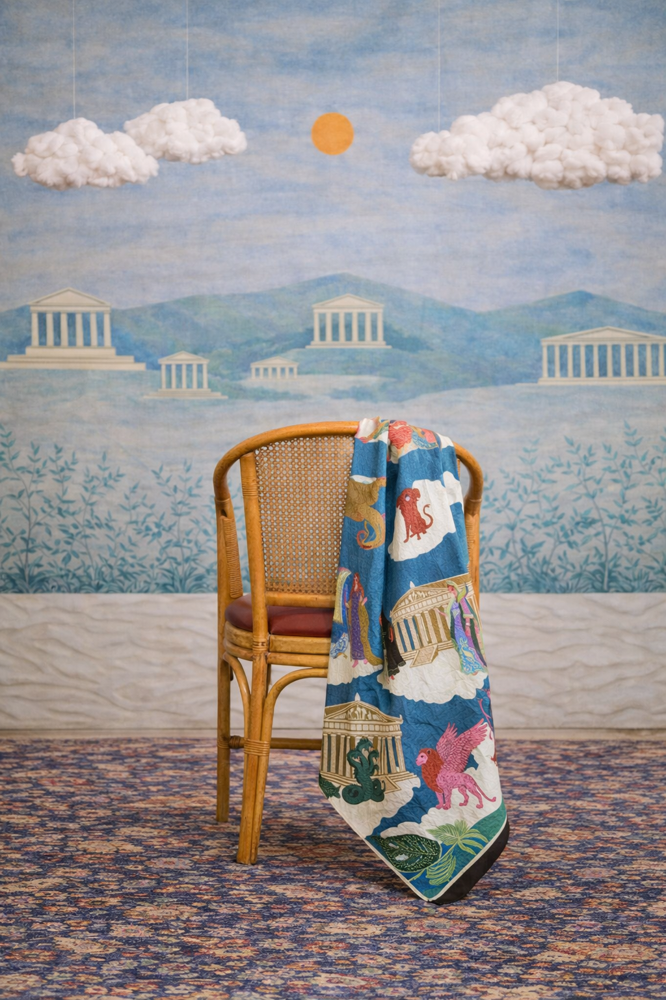

<title>María Méndez — Mythos on Silk</title>
<meta name="viewport" content="width=device-width, initial-scale=1.0">
<link rel="icon" type="image/png" href="assets/favicon.png">

<link rel="stylesheet" href="styles/variables.css">
<link rel="stylesheet" href="styles/base.css">
<link rel="stylesheet" href="styles/components.css">
<link rel="stylesheet" href="styles/page-project.css">

<!-- ─── NAV ─────────────────────────────────────────────────── -->
<nav class="comp-nav page-project--textile">
  <a class="comp-nav__logo" href="work.html">Maria Mendez</a>
  <ul class="comp-nav__links">
    <li class="is-active"><a href="work.html">Work</a></li>
    <li><a href="about.html">About</a></li>
    <li data-placeholder>Shop</li>
    <li><a href="contact.html">Contact</a></li>
  </ul>
  <div class="comp-nav__dot"></div>
</nav>

<!-- ─── PAGE ─────────────────────────────────────────────────── -->
<main class="page-project page-project--textile">

  <!-- PROJECT HEADER -->
  <header class="project-header">

    <div class="project-header__left">
      <p class="project-category">Textile · 2026</p>
      <h1 class="project-title">Mythos<br>on Silk</h1>
      <div class="comp-spec-sheet">
        <div class="spec-item">
          <div class="spec-label">Client</div>
          <div class="spec-value">María Méndez</div>
        </div>
        <div class="spec-item">
          <div class="spec-label">Discipline</div>
          <div class="spec-value">Diseño textil, Diseño de estampados &amp; Diseño de pañuelos de seda</div>
        </div>
        <div class="spec-item">
          <div class="spec-label">Year</div>
          <div class="spec-value">2026</div>
        </div>
      </div>
      <button type="button" class="cta-link gallery-view-all js-view-gallery">Ver toda la galería →</button>
      <p class="gallery-note">Arrastra las imágenes para moverlas · Doble clic para ver en galería</p>
    </div>

    <div class="project-header__right">
      <p class="project-desc">Mythos on Silk nace de una exploración personal de personajes femeninos de la mitología y de los roles que ocupan dentro de estas narrativas. Durante años he ilustrado estas figuras, especialmente mujeres que representan fuerzas, ideas o explicaciones para aquello que en su momento no tenía una respuesta clara. Me interesa esa dimensión simbólica y poderosa que adquieren dentro de sus propias historias.</p>
      <p class="project-desc">La colección de pañuelos de seda parte de esta investigación para reinterpretar estos personajes desde mi propio lenguaje visual, trasladando sus historias a través del color, el estampado y la composición. Cada diseño construye un universo propio, lleno de personajes, símbolos y detalles, pensado para aportar personalidad y variación a la forma de vestir.</p>
      <p class="project-desc project-desc--secondary">Lo que más me interesa de estos mitos es que, aunque muchas de sus historias puedan parecer ilógicas, exageradas o incluso absurdas desde una mirada contemporánea, siguen teniendo una estructura y una carga emocional. Son otras formas de entender el mundo: no siempre racionales, pero profundamente humanas. Mythos on Silk busca habitar precisamente ese espacio entre lo fantástico y lo cotidiano, convirtiendo esas historias en piezas de seda para llevarlas con nosotros.</p>
      <p class="project-desc project-desc--secondary">Lanzamiento: durante las dos primeras semanas de lanzamiento, todas las piezas estarán disponibles bajo pedido.</p>
    </div>

  </header>

  <!-- GALLERY — Layout B only -->
  <section class="comp-gallery-interactive"
    data-gallery-cover="assets/projects/mythos-on-silk/mythos-on-silk-cover.png"
    data-gallery-extra='[
      {"src":"assets/projects/mythos-on-silk/mythos-on-silk-07.png"},
      {"src":"assets/projects/mythos-on-silk/mythos-on-silk-08.png"},
      {"src":"assets/projects/mythos-on-silk/mythos-on-silk-09.png"},
      {"src":"assets/projects/mythos-on-silk/mythos-on-silk-10.jpg"},
      {"src":"assets/projects/mythos-on-silk/mythos-on-silk-11.jpg"},
      {"src":"assets/projects/mythos-on-silk/mythos-on-silk-12.jpg"},
      {"src":"assets/projects/mythos-on-silk/mythos-on-silk-13.jpg"},
      {"src":"assets/projects/mythos-on-silk/mythos-on-silk-14.jpg"},
      {"src":"assets/projects/mythos-on-silk/mythos-on-silk-15.png"},
      {"src":"assets/projects/mythos-on-silk/mythos-on-silk-16.png"},
      {"src":"assets/projects/mythos-on-silk/mythos-on-silk-17.png"},
      {"src":"assets/projects/mythos-on-silk/mythos-on-silk-18.png"},
      {"src":"assets/projects/mythos-on-silk/mythos-on-silk-19.jpg"}
    ]'>

    <div class="comp-drag-hint" id="dragHint">Move to Explore →</div>

    <div class="gallery-canvas" id="galleryCanvas">

      <div class="gallery-piece gp-1" data-rotation="-8">
        
      </div>

      <div class="gallery-piece gp-2" data-rotation="6">
        
      </div>

      <div class="gallery-piece gp-3" data-rotation="-4">
        
      </div>

      <div class="gallery-piece gp-4" data-rotation="9">
        
      </div>

      <div class="gallery-piece gp-5" data-rotation="-6">
        
      </div>

      <div class="gallery-piece gp-6" data-rotation="3">
        
      </div>

    </div>
  </section>

</main>

<script src="scripts/gallery.js"></script>
